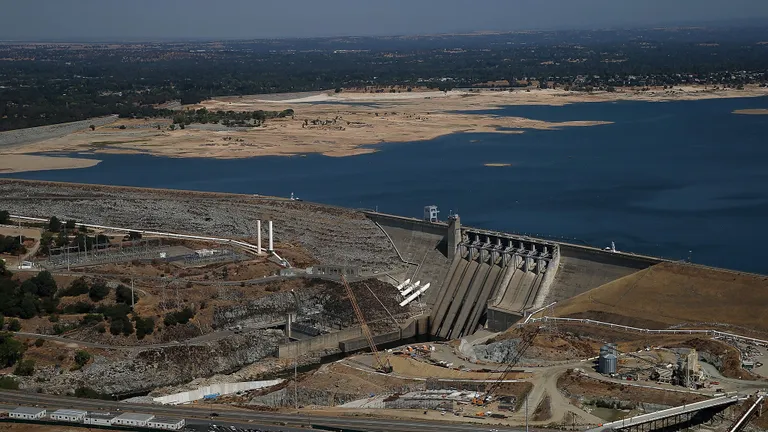
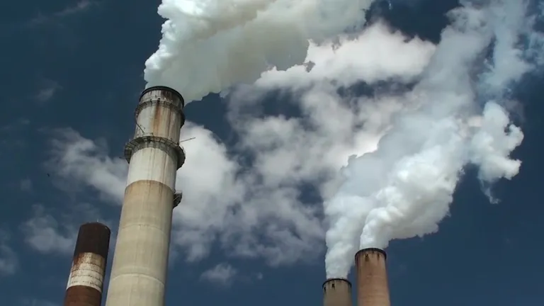

Um inesperado efeito colateral da seca: mais emissões de carbono
A estiagem prejudica árvores, pessoas e animais — e também o orçamento de carbono.
 Os níveis hídricos retrocederam às mínimas históricas nos lagos e reservatórios da Califórnia em 2014. Na Barragem Folsom, na Califórnia, os níveis recuaram a aproximadamente 40 por cento da capacidade total.Durante os dias mais sombrios da estiagem que assolou o oeste dos Estados Unidos desde o início dos anos 2000, incêndios irromperam e lavouras pereceram. Tempestades de poeira arrasaram vales e planícies. E rios encolheram de norte a sul. Contudo, a estiagem também surtiu efeitos climáticos e ambientais menos evidentes: a escassa vazão dos rios reduziu drasticamente a quantidade de energia livre de carbono que foi produzida por milhares de usinas hidrelétricas espalhadas ao longo de rios e reservatórios no oeste. Um grupo de pesquisadores fez os cálculos de carbono para verificar a magnitude do efeito. Eles descobriram que 100 megatons de carbono a mais acabaram na atmosfera porque os serviços de abastecimento elétrico tiveram de recorrer a fontes emissoras de carbono em vez da energia hidrelétrica durante a estiagem, somando os 15 anos que eles estudaram. É o equivalente a colocar cerca de 1,4 milhão de carros a mais na estrada em cada um desses 15 anos. “É uma parcela considerável entre as fontes existentes de carbono”, afirma Noah Diffenbaugh, cientista climático de Stanford e um dos autores do estudo, que foi publicado na revista acadêmica Environmental Research Letters. Em um ano normal, pouco mais de 20 por cento da energia produzida no oeste dos Estados Unidos vem de usinas hidrelétricas. Entretanto essa cifra flutua com o avanço e o recuo das águas. E, quando há escassez hídrica, o montante de energia produzida por essas usinas reduz drasticamente. No entanto, as pessoas precisam de luz, aquecimento e ar condicionado na estiagem, tanto quanto precisam (e, às vezes, precisam ainda mais) em épocas de abundância hídrica. Se os serviços de abastecimento elétrico não conseguirem a energia de que necessitam a partir de fontes hidrelétricas, terão de atender à demanda de outra maneira. A maior parte do tempo, verificaram os pesquisadores, os serviços de abastecimento elétrico recorreram a fontes emissoras de carbono como gás natural e carvão para atender às suas demandas energéticas. Não é o ideal, mas faz sentido, afirma Amir AghaKouchak, engenheiro civil e ambiental da Universidade da Califórnia, em Irvine.
 1 01 | MUDANÇAS CLIMÁTICAS Conheça as causas e o impacto do aquecimento global e das mudanças do clima em nosso planeta.“Sob condições de estiagem, a prioridade é destinar a água às pessoas e às cidades e os dirigentes acabam optando pela queima de gás para geração de energia”, conta ele. “Porque existem alternativas para obter energia de outras fontes—mas não existem alternativas para obter água”.
Fortes impactos
Estados como a Califórnia, Washington e Oregon, que dependem acentuadamente de energia hidrelétrica desde os anos com abundância hídrica, sofreram o maior golpe. E os custos climáticos foram imensos. Na Califórnia, por exemplo, o dióxido de carbono a mais emitido por causa da estiagem alcançou mais de sete por cento do total de suas emissões de carbono. Em Oregon e Washington, as emissões extras chegaram a aproximadamente 10 % do total. Essas porcentagens estão longe de serem insignificantes. Muitos estados do oeste criaram planos para reduzir expressivamente as emissões nas próximas décadas. A Califórnia, por exemplo, está tentando diminuir suas emissões para 80 % abaixo dos níveis de 1990 até 2050. Mas a estiagem está devastando todos os estados do oeste de tal maneira que eles estão caminhando na direção contrária, tornando-se cada vez mais difícil para eles cumprirem suas metas de redução de emissões.
Megasseca no futuro?
Na última década, o oeste dos Estados Unidos sofreu alguns dos piores períodos de estiagem já vistos em séculos. Agora, alguns cientistas acreditam que o sudoeste dos Estados Unidos está se preparando para uma “megasseca”—uma estiagem que durará no mínimo 20 anos. E as previsões indicam que locais áridos estão propensos a se tornar ainda mais áridos, sobrecarregando o sistema hidrelétrico ainda mais. “As secas intensificarão, o que poderia implicar ainda mais queima de carvão e gás natural”, afirma Peter Gleick, especialista hídrico do Pacific Institute (Instituto do Pacífico, em tradução livre), organização de pesquisa localizada em Oakland. “Isso é retroalimentação positiva—o que, em termos de mudanças climáticas, é um aspecto negativo.” É fácil se deixar levar por esse sistema de retroalimentação positiva, conta ele—mas quanto mais cientes dele estão os dirigentes, mais capazes eles serão de planejar uma forma de escapar dele. AghaKouchak destaca que é enorme o custo de carbono desse período de estiagem específico, desse local específico—mas, independente da época, diversas regiões do mundo estão enfrentando sua própria escassez hídrica. “E, se você acrescentar o impacto acumulado de todos esses fenômenos extremos sobre as emissões de CO2”, afirma ele, antes de uma pausa. “Bem, está muito além do que se pode imaginar.” Porém, Diffenbaugh ressalta que, com esse e os inúmeros outros estudos dos últimos anos, descobrimos cada vez mais por que e em que situações as fontes de energia livres de carbono sofrem dificuldades. Munidos dessas informações, prossegue ele, e com previsões cada vez mais precisas das futuras crises no sistema, como crises hídricas, os dirigentes elétricos poderão descobrir uma maneira de atender à demanda energética com mais fontes renováveis.

A energia solar é obtida por meio de placas solares, que captam a energia luminosa e a transformam em energia térmica ou elétrica. Os painéis solares captam a luz do sol e geram energia que é transportada até o inversor solar.

A energia eólica é um tipo de energia renovável gerada da força dos ventos. A estrutura em que ocorre a conversão da energia cinética em eletricidade é chamada de aerogerador.
Energia sustentável é a energia produzida a partir de fontes renováveis, isto é, que não se esgotam como os combustíveis fósseis, por exemplo.

A energia do mar é a energia maremotriz, que é gerada pelo movimento das marés. As marés são causadas pela força gravitacional da Lua e do Sol. A energia maremotriz é renovável e limpa